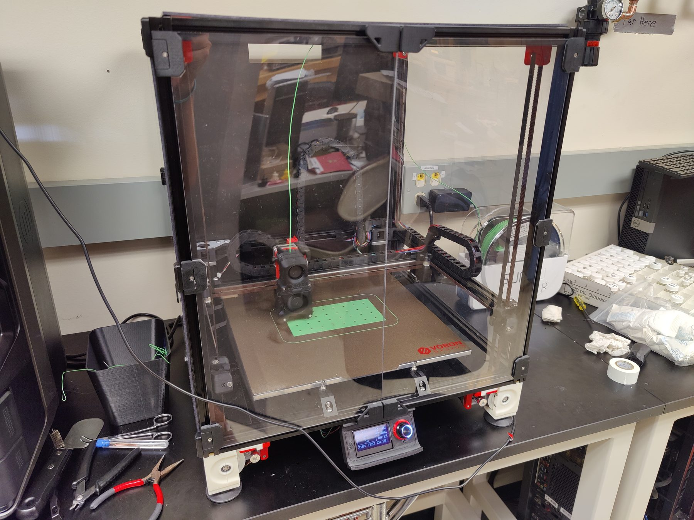
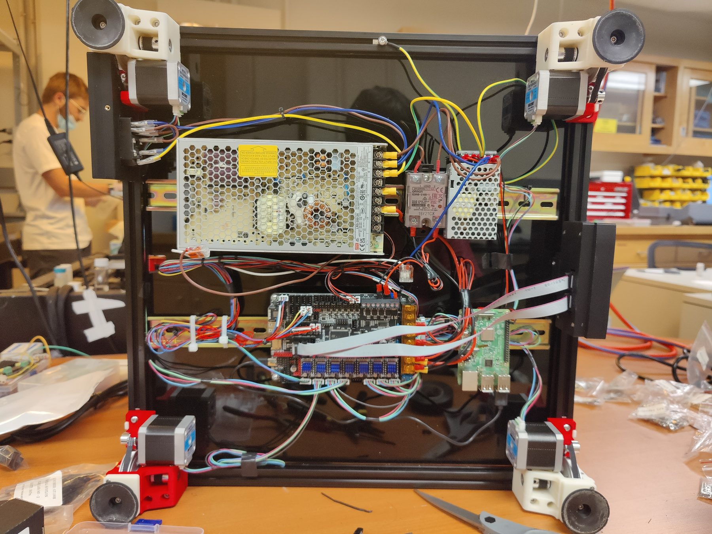

Sun Research Group · Jun 2022 – Jul 2022
Voron 2.4 3D Printer
A Voron v2.4 3D printer that I assembled from a bare kit and tuned heavily to optimize print quality and speed.


Overview
The Voron v2.4 is a general-purpose lab printer that I assembled and tuned over the summer. It uses a quad-gantry system, where each corner of the gantry is individually controlled by a stepper motor to automatically level the printhead with the bed (as opposed to bed screws). It has a total print volume of 350 × 350 × 330 mm and uses an enclosed chamber with lexan side panels to retain heat and reduce warping.
I also implemented a suite of software optimizations, including input shaping (to reduce ringing), pressure advance (to sharpen corners), and remote access, to improve print quality and utility. After tuning, the printer could print a high-quality 3DBenchy in under 30 minutes, a print that usually takes over an hour. The printer was assembled from a barebones kit and many 3D-printed parts, and took around two weeks to fully assemble and wire all of the electronics.